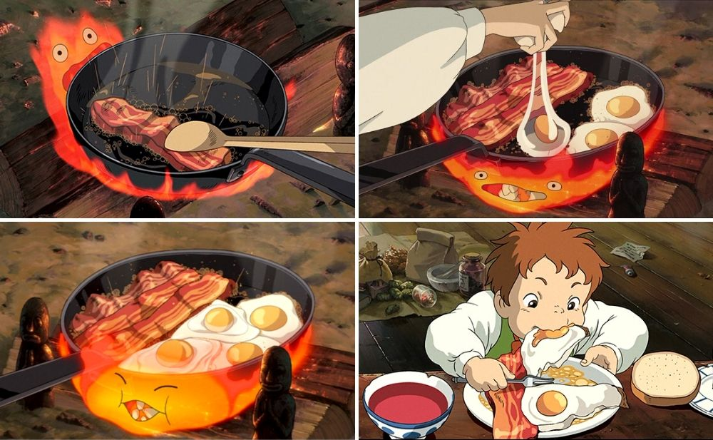

Calcifer's Breakfast - Bacon and eggs

What you'll need
- 3 thickly cut bacon slices
- 6 eggs
Optional
- 1 large onion
- Sourdough bread
- 1 tsp of thyme
- 1 tsp salt
- Some slices of tomatoes
- 1 tbsp red wine vinegar
Steps
- Heat the frying pan on low heat and fry the bacon until golden brown.
- Move the bacon to a corner of the pan and fry 6 eggs on low hear as well.
- Serve when the eggs are fried to your preferred doneness.
Optional steps
- Chop and mince the onion.
- Heat the frying pan on medium heat and fry the minced onions till translucent. Add a few slices of tomatoes.
- Season with thyme, salt, and red wine vinegar and fry for 1 minute.
- Serve together with the eggs, bacon, tomatoes, and sourdough bread.